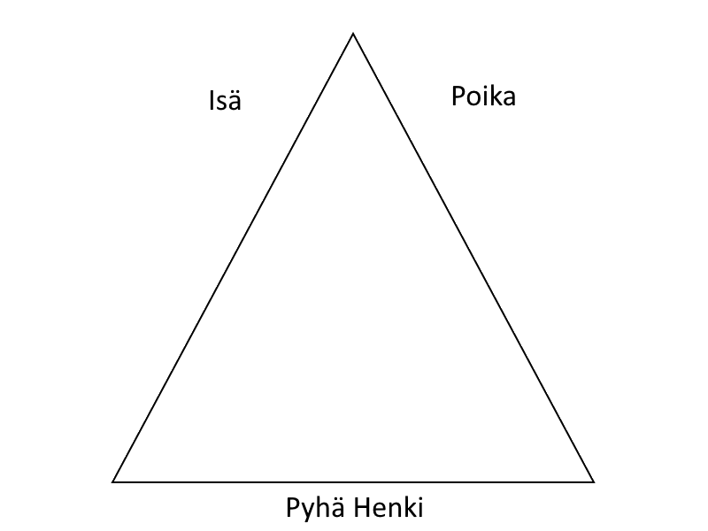
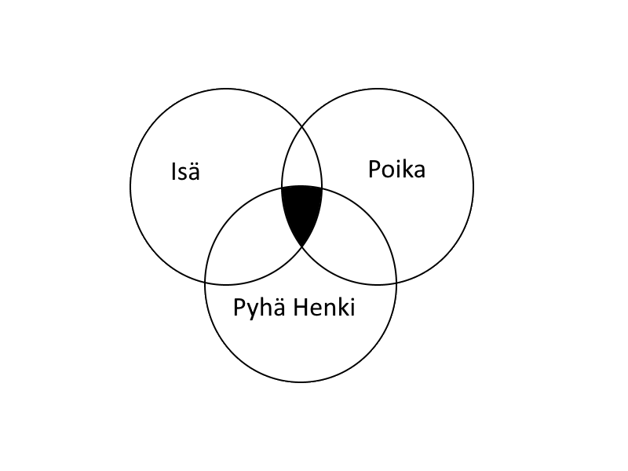
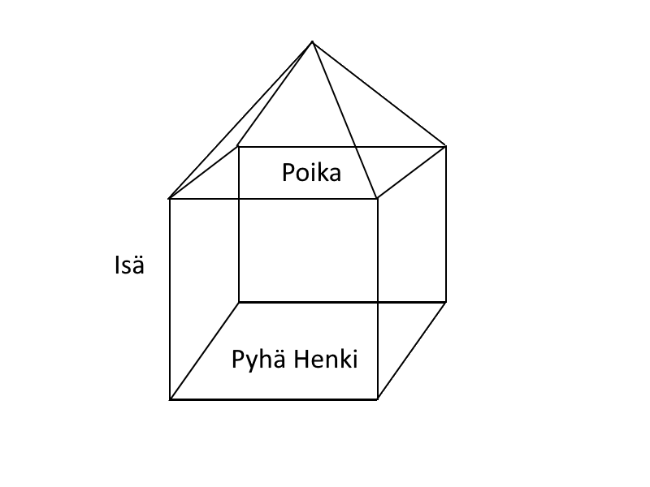
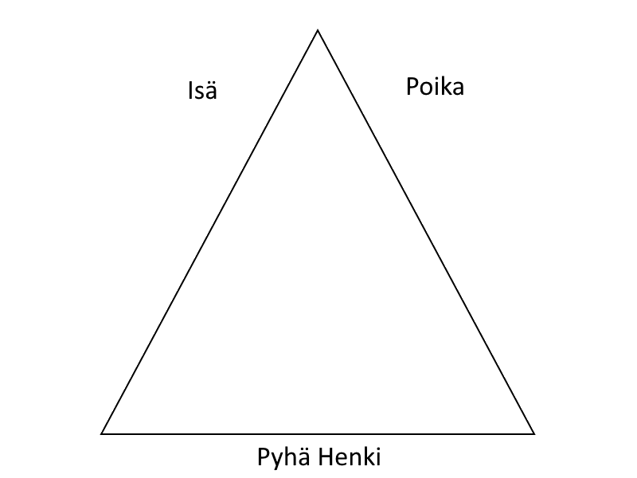
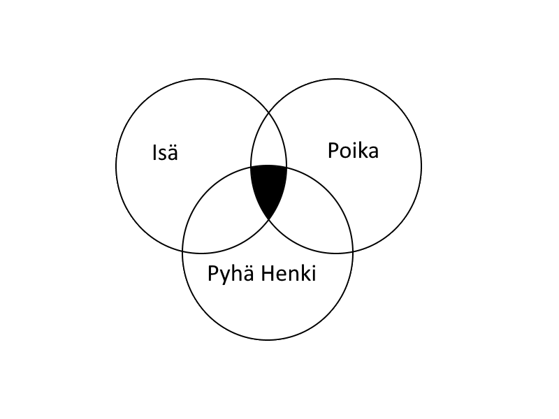
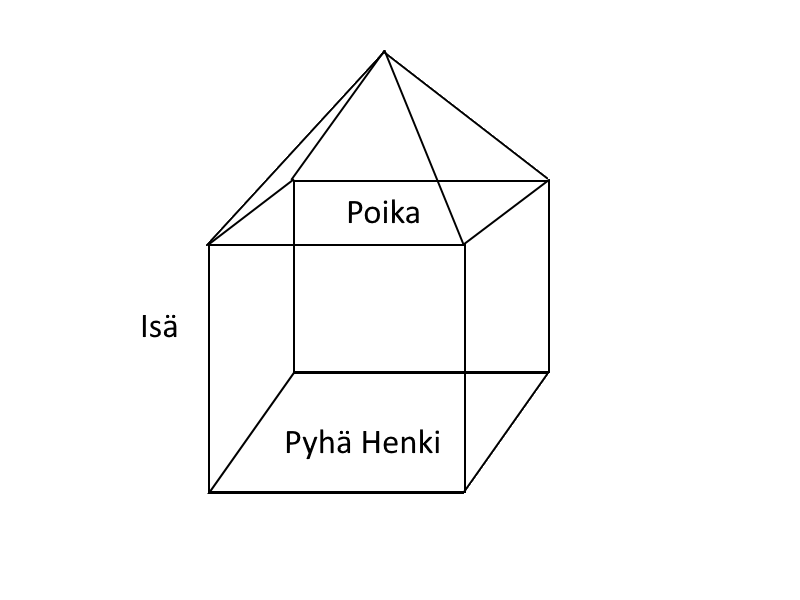

IV. Kirkkovuoden juhlattoman puoliskon piiri
Kolminaisuudenpäivä
- Jumalan kolmen persoonan tutkiminen: Isä, Poika ja Pyhä Henki
- Liturginen väri: Valkoinen
- Symbolit:
  
Tekijä: Tuukka Penttinen
- Jumalan kolmen persoonan tutkiminen: Isä, Poika ja Pyhä Henki
- Liturginen väri: Valkoinen
- Symbolit:
  
Tekijä: Tuukka Penttinen